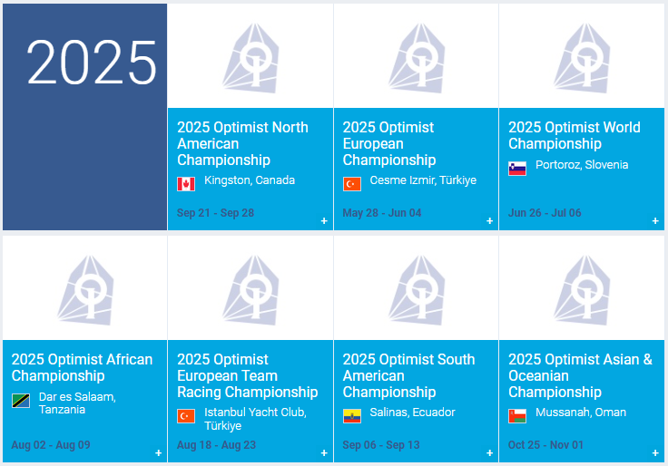
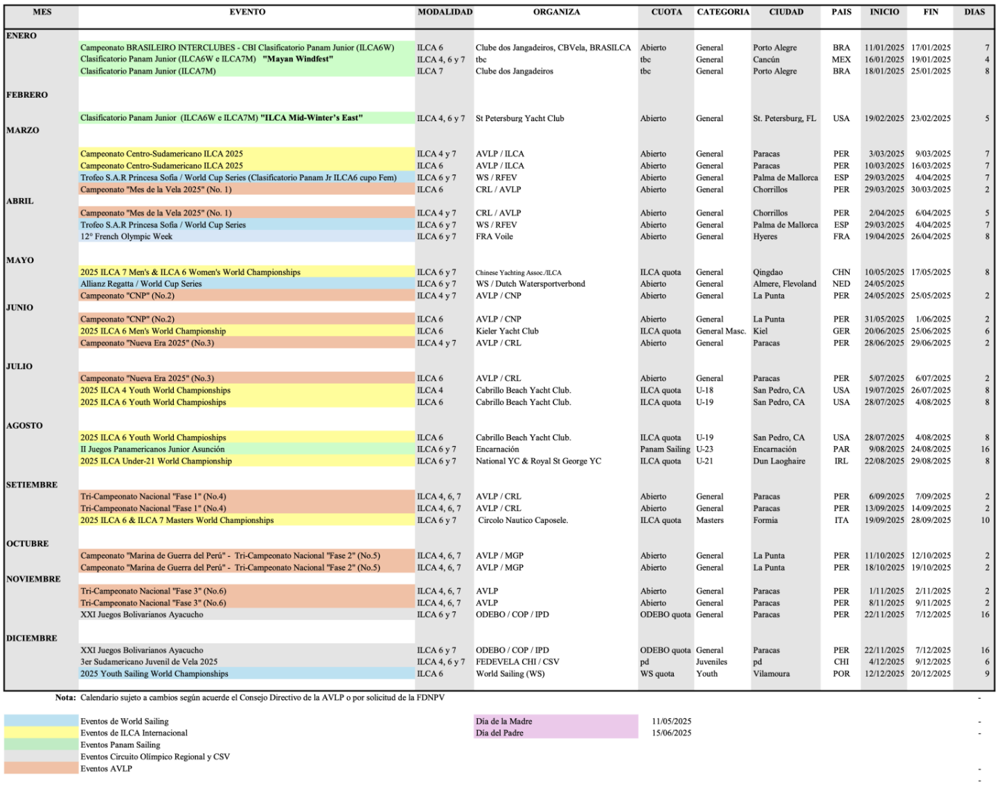

Introducción
Las competiciones de barcos de vela son carreras en las que se enfrentan embarcaciones impulsadas por el viento, con el objetivo de completar un recorrido en el menor tiempo posible. Los participantes deben maniobrar sus veleros aprovechando las condiciones del viento y el agua, combinando habilidad, estrategia y rapidez.
Regatas por Equipos
Las regatas por equipo son competiciones de barcos en las que varios participantes trabajan juntos para maniobrar una embarcación hacia la meta. Requieren coordinación, comunicación y estrategia colectiva. Algunas de las más importantes son:
- The Ocean Race: Conocida anteriormente como la Volvo Ocean Race, es una de las regatas más prestigiosas a nivel mundial, famosa por su longitud y desafío.
- Barcelona World Race: Una competición de regata alrededor del mundo sin escalas y sin ayuda, que se celebra cada cuatro años.
- Copa América de Vela: Considerada la cumbre de las regatas internacionales, se remonta a 1851 y es una de las competiciones más antiguas y prestigiosas.
Regatas en Solitario
Las regatas en solitario son carreras en las que un solo navegante maneja la embarcación. Estas competiciones requieren gran habilidad, resistencia y valentía. Algunas de las más destacadas son:
- Golden Globe Race: Una regata sin escalas alrededor del mundo para navegantes solitarios, limitada a embarcaciones diseñadas antes de 1988.
- Vendée Globe: Una regata de una sola clase de barcos, la IMOCA 60, considerada el pináculo de las competiciones profesionales de vela en solitario.
- Global Solo Challenge: Una competición creada para llenar el vacío entre la Vendée Globe y la Golden Globe Race, abierta a varios tipos de embarcaciones y navegantes.
- Regata 5 Océanos: Organizada por Velux, es una de las regatas oceánicas más desafiantes, dividida en varias etapas alrededor del mundo.
Asociaciones Relacionadas con las Competencias
Existen varias asociaciones que regulan y promueven las competencias de barcos de vela:
- Federación Internacional de Vela (ISAF): Regula las normas del deporte de vela a nivel competitivo y organiza competiciones en diversas clases.
- Asociación de Vela Oceánica del Perú (AVOP): Promueve y desarrolla el deporte de la vela oceánica en Perú, organizando regatas a nivel nacional e internacional.
- Club Regatas Lima: Ofrece competiciones y talleres en deportes acuáticos, incluyendo vela y windsurf.
- Asociación Peruana de Optimist (APO): Promueve la vela en la clase Optimist, especialmente entre niños y jóvenes, organizando regatas y capacitando a entrenadores.


Competencias donde ha Participado Perú
Perú ha tenido una destacada participación en varias competiciones de regatas, demostrando su talento y habilidades en el deporte de la vela. Algunas de las competencias más recientes incluyen:
Próximas Competiciones de Regatas
Para conocer más sobre las próximas competiciones de regatas en Perú, se pueden consultar los siguientes calendarios: